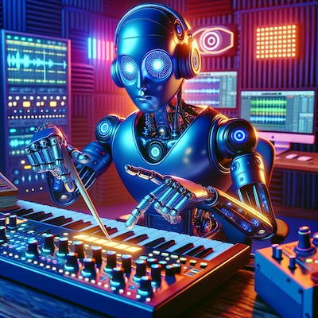
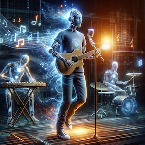
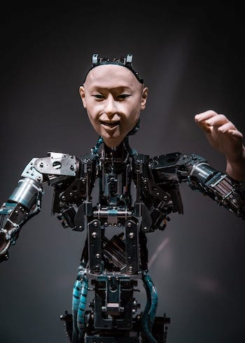

Introduction
In the realm of music, the entire basis of composition has always been centered around the human element. Music's creation and rendition has long been celebrated as uniquely human expressions of emotion, culture, and creativity. However, in recent years, with the emergence of artificial intelligence, there has been a strong shift in the landscape of music creation. While the topic of artificial intelligence has certainly garnered a plethora of excitement and skepticism, it's important to explore the multifaceted implications.
Like all new things in this world, it should be approached with caution but address with curiosity. Surviving as a double-edged sword in this ever-changing time of innovation, artificial intelligence could be an extremely useful asset towards the music world but should be utilized in moderation. Through an opinionated perspective, a deeper understanding artificial intelligence in the world of music composition will be explored.
Novel Musical Creativity
Artificial intelligence opens an entirely new realm of potential musical potential creativity. The phrase “Writers Block”, commonly employed in the world of literature, is also found frequently in the world of music. The temporary inability to create new and original rhythmic masterpieces is a frequent fear felt by all composition artists and is always hard to escape. Many methods are used to fix this interim block however, with the addition of artificial intelligence, a whole new world of creative potential has been unlocked.
“AI can assist artists in the creative process by providing new sources of inspiration… AI algorithms can analyze vast amounts of music data and generate melodies, harmonies, and rhythms that align with specific musical genres or styles..."
Through this analysis and composition, artificial intelligence can create entirely new music with a familiar twist. Artificial intelligence generated music can go beyond genre norms, forging new paths through unique compositions. This flexibility and exploration could be the gateway to innovation beyond what was thought to be artistically possible. On the smaller level, AI algorithms can analyze large amounts of data to identify delicately hidden patterns and harmonies that would've once been overlooked. These small tools powered by AI could prove to assist musicians with more innovative and captivating pieces.
AI Efficiency and Routine
Serving as a different version of inspiration, artificial intelligence can also be a helpful collaborator when aiding with musical creation. Musicians can input their ideas and drafts into an AI leading to more put together seamless blend between human and machine. A professor at the Universidad Loyola Andalucía in Spain, Miguel Civit, concurs saying: “Moreover, AI music generators can be valuable tools for musicians who lack formal training in music theory, as they can assist in creating complex musical compositions"
In today's music industry, time is money and with the AI's ability to craft otherwise time-consuming feats of composition, artists can speed up the process to produce pieces much quicker. This eventually leads to benefitted business side of things providing listeners with more music to enjoy and more plays for the artist. During live performances, artist occasionally compose or create on the spot which is an incredibly difficult and high stakes effort. If AI systems were utilized, they could not only adapt to assist the musician's play style, but also cover any mistakes to make the live experience run smoothly and ensure the listeners are having a good time.
Genre Pattern Analysis
Artificial intelligence has not only been able to analyze singular songs, but it also can analyze and delve deeper into one's music history and preferences, analyzing patterns that might allude to human creators. Listening habits, favorite genres, and sometimes even the mood of the listener can be crucial factors when an artificial intelligence generates a highly personalized music recommendation.
In today's music industry, time is money and with the AI's ability to craft otherwise time-consuming feats of composition, artists can speed up the process to produce pieces much quicker. This eventually leads to benefitted business side of things providing listeners with more music to enjoy and more plays for the artist. During live performances, artist occasionally compose or create on the spot which is an incredibly difficult and high stakes effort. If AI systems were utilized, they could not only adapt to assist the musician's play style, but also cover any mistakes to make the live experience run smoothly and ensure the listeners are having a good time.
“AI models can create music tailored to listeners' tastes by analyzing their history and preferences. This personalized approach makes the music more meaningful and enjoyable for the audience, increasing their engagement and satisfaction. Generative AI allows users to create music tailored to each audience's specific taste, making it more personal and engaging"
Is this Right?
On the other side of the sword comes an assortment of ethical and moral standpoints that certainly have reason to exist and are still found in a grey area of validity and power. One of the big problems with the creation of music through artificial intelligence pertains to the establishments of copyright and ownership. It brings the question to the table of “Who holds the rights to the resulting composition?”. These sorts of moral dilemmas are beyond the current stage of court and government now so it's impossible to tell. While copyright laws are intended protect and encompass the intellectual property of human creators, the line becomes blurred when it comes to AI.
With AI music generators gaining more and more popularity with time, there could be time where demand for human created music becomes obsolete. This could lead to utter economic failure with producers, artists, and others losing their jobs as a result of the music industry migrating into a more AI focused generation. Lastly, it could be argued that AI generated music lacks human touch or soul. Soul plays a massive role in the music. Not just the expression of thoughts, feelings, or expressions, but the connection to nature and oneself is unique experience that can only be retold by a human. While AI may mimic emotional cues, it lacks the ability to capture the depth of the human experience which leaves its composition feeling machine-like and shallow.
Conclusion
The creation of music through the use of artificial intelligence without a doubt has its positive attributes and negative attributes. However, the world is moving into modern time of musical innovation, so AI has the ability to be a very useful collaborator along with human artists. Nothing can replicate the essence of human touch and soul in a musical piece so in that sense it is necessary for humans to still be a part of the music creative process. While laws and regulations need time to catch up to the age of AI-generated music, it is still crucial to preserve the balance between creative potential and authenticity. Ultimately, the future of AI in the world of music composition lies in the hands of humans and what they choose to do with it.
